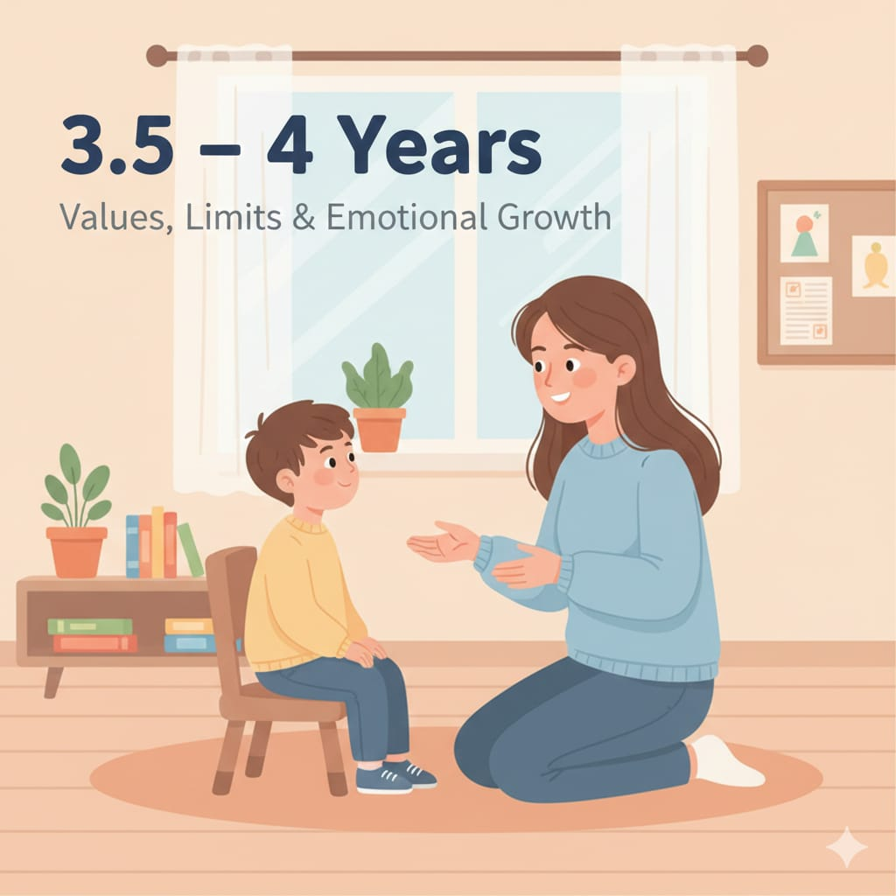

3.5 – 4 سنوات
الطفل يبدأ يفهم القواعد أكتر، ويختبر “الحدود”، ويحتاج تدريب على الاستماع، وضبط الانفعال، وتثبيت القيم بأسلوب بسيط ومتكرر.

قاعدة ذهبية: أمر واحد واضح + تواصل عين + نتيجة ثابتة… أحسن من صراخ كتير.
الطفل يبدأ يفهم القواعد أكتر، ويختبر “الحدود”، ويحتاج تدريب على الاستماع، وضبط الانفعال، وتثبيت القيم بأسلوب بسيط ومتكرر.
